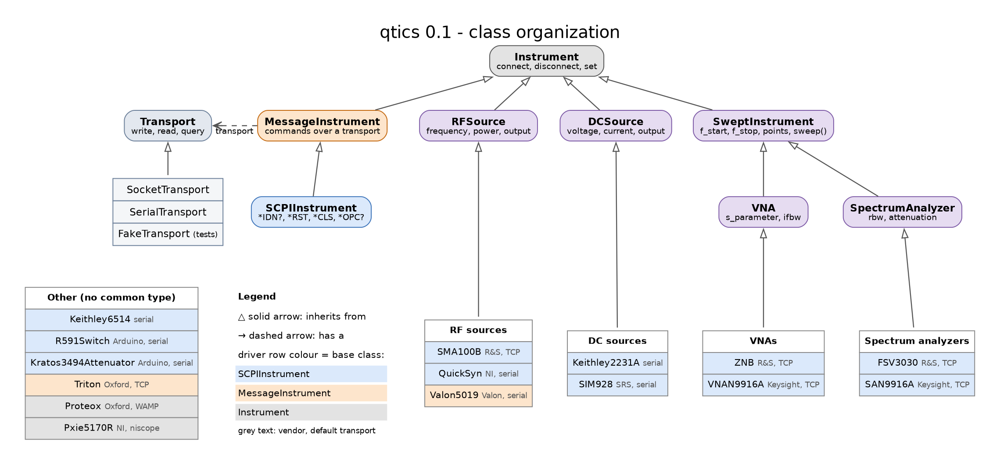

Migrating to qtics 0.1#
Version 0.1 reorganizes the package by vendor and gives instruments of the same
type a common interface. from qtics import <Class> keeps working for every
driver (old class names are kept as aliases), but deep module paths changed and
several attributes were renamed.
qtics now contains only instrument drivers: the experiment classes
(qtics.experiment: Experiment, MonitorExperiment, BaseExperiment)
and the experiments dependency group (h5py, matplotlib) were removed.


Connections#
Drivers no longer inherit from NetworkInst/SerialInst: they hold a
transport (qtics.transport). Pass an address and the driver builds its
default transport, or pass a transport explicitly:
from qtics import ZNB, Valon5019
from qtics.transport import SerialTransport, FakeTransport
vna = ZNB("192.168.0.4") # socket, port 5025
synth = Valon5019("/dev/ttyUSB0") # serial, driver defaults
synth = Valon5019("/dev/ttyUSB0", delay=0.5) # override a transport option
test_vna = ZNB(FakeTransport(default="0")) # no hardware, for tests
with ZNB("192.168.0.4") as vna: # connect/disconnect
f, s21 = vna.snapshot()
The constructor signature is
(transport_or_address, name=..., **options):nameis now the second argument (it was the last one).Pxie5170Rtakes(address, name)(it was(name, address)).The old
sleepoption is the transportdelay. Thesleep,socketandserialattributes of the instruments are gone: useinst.transport(e.g.inst.transport.delay,inst.transport.socket).The default
nameis now the class name (e.g."ZNB"instead of"RSZNB","Valon5019"instead of"VALON","VNAN9916A"instead of"N9916A").Writing to a disconnected instrument raises
ConnectionError(network instruments used to log a warning and ignore the command).Network addresses are no longer validated as IPs: hostnames are accepted.
Tritonhas no default IP address anymore.Instruments are no longer disconnected in
__del__: usedisconnect()or awithblock. Teardown commands (e.g. KeithleySYST:LOC) are sent only bydisconnect().reset()sends*RSTonly to SCPI instruments; on the others (e.g.Triton) it only restores the default values.
Module paths#
old |
new |
|---|---|
|
|
|
|
|
|
|
|
|
|
|
|
|
|
|
|
|
|
|
|
|
|
|
|
|
|
|
|
|
|
|
|
Class names#
Old names still work from qtics: RSZNB -> ZNB, VALON5019 ->
Valon5019, FSQS -> QuickSyn, Pxie570R -> Pxie5170R,
Switch_R591/Radiall_R591722600 -> R591Switch,
Attenuator_3494_64/Kratos_349464 -> Kratos3494Attenuator,
SRS_SIM928 -> SIM928, Keithley_6514 -> Keithley6514,
Keithley_2231A -> Keithley2231A. The asynchronous Proteox class is now
AsyncProteox; Proteox is a new synchronous wrapper.
Attributes#
Units are SI (Hz, s, V, A), powers in dBm; on/off states are bool properties.
Swept analyzers (VNAN9916A, SAN9916A, ZNB, FSV3030):
f_min/f_max->f_start/f_stop;sweep_points->pointsaverage->averages;IFBW->ifbw;s_par->s_parametersingle_sweep()->sweep();continuousis a bool propertyread_trace_data()no longer sweeps: usesweep()orsnapshot()query_data()methods ->qtics.instruments.utils.query_binblock(inst, cmd, datatype)SAN9916A:res_bandwidth->rbw,auto_res_bandwidth->auto_rbwZNB:t_min/t_max->t_start/t_stop;time_domainandharmonic_gridreturn bool
RF sources:
SMA100B:f_fixed->frequency,p_fixed->power,rf_status/on()/off()/is_on()->output,f_min/f_max->f_start/f_stop,p_min/p_max->p_start/p_stop. The power unit is set to dBm when connecting. Frequency limits follow the multiplier and offset (rf_min/rf_maxset the hardware range);f_stopis clipped like the other frequencies instead of raising.Valon5019:f_fixed->frequency,p_fixed->power,rf_status->output,sweep_start/sweep_stop/sweep_step->f_start/f_stop/f_step,freq_offset->f_offset,freq_step->f_step_cw;outputandpower_pdntake bool.QuickSyn:freq->frequency,output_on->output.
Triton:
mixing_chamber_tsetis set in K, like it is read (the setter took mK).heater_rangeis in A (it was read in mA).get_actionreports “Circulating” only below 2 K (the threshold compared K with 2000).
DC sources and others:
Keithley2231A: newoutputproperty.SIM928:output_on()/output_off()/on()/off()/is_on()->output;voltagereturns float.R591Switch:pulse_lenght->pulse_length(int).Kratos3494Attenuator:attenuationreturns float.